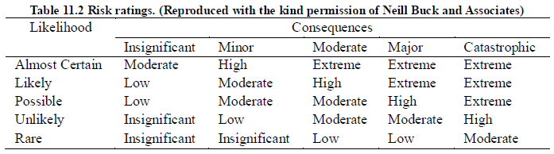
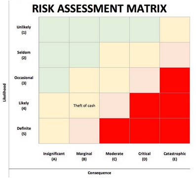
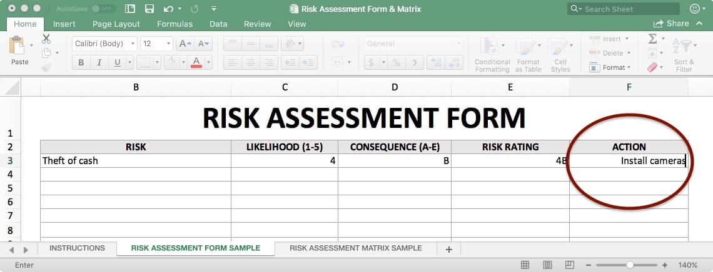

Risk is inherent in all engineering work and part of the role of the engineer is to manage risk levels and to keep them to the very low levels that are acceptable to society.
| Risk Analysis | Risk and How to use a Risk Matrix |
| Project Risk Management - How to Manage Project Risk | |
| Risk Analysis How to Analyze Risks on Your Project - Project Management Training |
Assignment 4 - The Construction of a Log Cabin
In order to avoid future difficulty, the project triumvirate, as a minimum, should carry out a risk analysis, the results of which become part of the project plan. This analysis attempts to focus on trouble spots before the fact, developing risk-mitigation strategies prior to actual work on project tasks. In general, it can be said that there are four kinds of risk that the Project Manager would be concerned with. These are
Question: What are some typical technical performance risks for software projects?
Answer: Memory leaks, ghost threads, open files, unhandled exceptions, slow performance, excessive memory usage,
excessive power usage, minor bugs, security (including data leaks),...
Schedule risk, of course, involves not meeting project milestones. If internal milestones are not met, then the PM may be able to get back on schedule by the deployment of additional resources and other means. Customer delivery and review dates are viewed as much more serious, especially the delivery of parts of the system and special reports to the customer. If penalty clauses for late delivery are operative, schedule risks in this regard are considered critical. Analysis of the project chart is usually a good place to start in assessing schedule risk. Activities and events on the critical path should be examined in considerable detail because this path is the controlling factor in the overall project schedule.
Question: What is the critical path (review)?
Answer: The critical path is a chain of linked tasks that directly affects the project finish date. If any task on the critical
path is late, the whole project is late.
Cost risk is often experienced when not enough effort has gone into the early cost-estimation processes.
Question: Are cost risks and schedule risks the same for software projects?
Answer: Costs for software projects are almost 100% due to labour costs (the human-hours involved). So, cost and schedule risks are closely
related.
Risk to the project may be present when the overhead and general and administrative rates in the enterprise are not stable. If these rates increase in the middle of the project, they will impact total cost even though the PM may be doing everything correctly. In such a case, the PM is somewhat "off the hook," but may still be asked to try to make up for these cost increases. This type of risk may be called an administrative risk, but its effect results in a cost risk. Another type of administrative cost risk involves the failure of the company to hire on time for the project, or the unexpected loss of a key person to another firm halfway through the project.
Question: would you consider mass layoffs an administrative risk?
Answer: Yes. It does happen. You might lose a chunk of your team. You are not expected to put this in your project plan however, because
it would be very demoralizing to the project team. Those terminated without cause might indeed return to the company after a time.
There are often many risks to the success of the project and it behooves the project triumvirate to attempt to anticipate these risks and establish risk-mitigation strategies. Therefore, the risk-analysis portion of the project plan would consider the previous four types of risks in terms of the following questions:
Question: Based on the above, how would we calculate the risk priority number?
Answer: RPN = likelihood x severity
Dougherty and Fragola (1988) define risk as the combination of the probability of an abnormal event or failure and the consequences of that event or failure to a project's success or a system's performance. This combination of probability (or likelihood) and consequences (or severity) is used in tables of risk ratings such as the below table.
In the above table, catastrophic consequences would involve loss of life, major consequences include serious injury or major economic loss, moderate consequences include minor injuries or moderate economic loss, and minor consequences include minor economic loss. Efforts to minimise risk should give priority to the activities that have an extreme or high risk rating.
Question: What would be catastrophic to a software product?
Answer: The software stops working and no one knows why. Data leaks of a lot of people from an
e-banking website.
Question: What are some ways of mitigating catastrophic risks for software?
Answer: Embedded logging that dumps logs to a file on the system as the software is running, so you could
see what was happening when the software crashed. These logs could also be transmitted via network to a
central server which the software is running. A system monitor task on your software product that monitors
all processes - if a process shuts down, the system monitor will restart it, and send a message via the
network logging the event.
For data leaks, add another layer of encryption, add another layer of authentication (2-step authentication),...
Change a part of the software to "fix" the problem(s) that caused the catastrophe in the first place.
To conduct your own risk assessment, begin by defining a scope of work. Identify hazards relating to your scope. The list should be long and comprehensive and may include anything.
Question: Do you consider this the most important step?
Answer: Yes, and to do it properly requires a lot of experience.
For each hazard, determine the likelihood it will occur. This can be measured as a probability (a 90 per cent chance) or as a frequency (twice a year). Then, based on the likelihood, choose which bracket accurately describes the probability:
In the same fashion as above, calculate potential loss using either quantitative measurements (dollar), qualitative measurements (descriptive scale) or a mix of both. Then, based on the magnitude of the consequences, choose which bracket accurately describes the losses:
Assign each hazard with a corresponding risk rating, based on the likelihood and impact you've already calculated. For example, a hazard that is very likely to happen and will have major losses will receive a higher risk rating than a hazard that's unlikely and will cause little harm. Risk ratings are based on your own opinion and divided into four brackets. They are:
Your risk action plan will outline steps to address a hazard, reduce its likelihood, reduce its impact and how to respond if it occurs. Depending on the severity of the hazard, you may wish to include notes about key team members (i.e., project manager, PR or Communications Director, subject matter expert), preventative measures, and a response plan for media and stakeholders.
A risk assessment matrix simplifies the information from the risk assessment form, making it easier to pinpoint major threats in a single glance. This convenience makes it a key tool in the risk management process. Every risk assessment matrix has two axes: one that measures the consequence impact and the other measures likelihood. To use a risk matrix, extract the data from the risk assessment form and plug it into the matrix accordingly.
In the below table, green is low risk, yellow is medium risk, orange is high risk, red is extreme risk.
The following is the risk assessment form for the above risk:
Question: Do you prefer a visual display of risks or a tabular presentatin of risks?
Answer: Why not both? The executives will prefer the visual display because it summarizes everything. Those
closer to the project will prefer the tabular presentation because it can pack more detail.
OR you could simply have a coloured table!
Identifying risk is an important first step. It is not sufficient though. Taking steps to deal with risk is an essential step. Knowing about and thinking about risk is not the same as doing something about risk. Risk will occur. Some good, some bad. Some minor, some catastrophic. Your ability to mitigate risk allows you to proactively acknowledge and accommodate risks. Let's talk about four different strategies to mitigate risk: avoid, accept, reduce/control, or transfer.
If a risk presents an unwanted negative consequence, you may be able to completely avoid those consequences. By stepping away from the business activities involved or designing out the causes of the risk you can successfully avoid the occurrence of the undesired events.
One way to avoid risk is to exit the business, cancel the project, close the factory, etc. This has other consequences, yet it is an option.
Another approach is to establish policies and procedures that assist the organization to foresee and avoid high-risk situations. By not starting a project that includes a high unwanted risk successfully avoids that risk.
Testing or screening of products that may have a latent defect which may lead to unwanted and unacceptably high field failures is an option. Screening is not 100% effective yet may reduce the risk of field failures sufficiently.
Design out of a product or process the elements that permit an unwanted risk to arise. A product design change to a more robust material avoids unwanted failures due to unacceptable wear of a less robust material. Implementing engineering design reviews in the product lifecycle process may help identify high-risk areas of a new product or process prior to the decision to start shipping. THIS IS WHAT YOU WANT TO DO!!
Question: Let's say you are really concerned about memory management in your software product, but not with overall memory usage. How
might you avoid memory management risk?
Answer: Remove all memory allocation/deallocation and use arrays instead. Use smart pointers. Use wrappers or containers to manage resources
other than memory.
Every product produced has a finite chance of failing in the hands of your customer. When that risk is at an acceptable level, sufficiently low estimated field failure rate, then ship the product. Accept the risk.
When the decision to accept the risk is in part based on an estimate or prediction, there is the risk the information incorrectly forecasts the future. Therefore, for high consequence related field failures, closely monitoring field performance or establishing early warning systems may be prudent.
Question: How might we closely monitor field performance for software?
Answer: As mentioned before, sending logs over the network to a central server.
If it is not possible to reduce the occurrence or severity, then implementing controls is an option. Controls that either detect causes of unwanted events prior to the consequence occurring during use of the product, or the detection of root causes of unwanted failures that the team can then avoid.
Controls may focus on management or decision-making processes. Improving the ability to find design flaws or to improve the accuracy of field failure rate prediction both improve the ability to make the appropriate decisions concerning risk.
Another method to reduce or control risk is to diversify. Thinking through the mix of products, technologies, markets, operations, and supply chains permit the team the ability to limit the high-risk opportunities to a manageable or acceptable level.
Finally, unwanted events or high field failure rates will occur. Think through both how you will detect the onset of the event and how to respond. It may be wise to stop production and shipping when product failures, even one, has a major consequence (starts a home on fire, for example). Have plans in place. Acting quickly and appropriately may reduce the exposure to more failures/adverse consequences.
Question: Let us say you have software that provides services for many users at a company, but you note through monitoring that over weeks it
slowly loses memory perhaps due to stray processes or ghost threads. How might you control this risk?
Answer: Remote reboot of your software weekly. Perform regular backups - daily incremental, weekly full. Storing data on the cloud.
This strategy is to shift the burden of the risk consequence to another party. This may include giving up some control, yet when something goes wrong your organization is not responsible.
This approach may not work to protect your brand image if the product is associated with your organization. Even if the power supply vendor pays for all damages due to failures in their unit, the customer only knows that your product has failed and caused damage. Use this approach with caution.
A conventional means to transfer risk to another organization is with the purchase of insurance. This may require a careful analysis of the presenting risks and probabilities, yet is a viable option in some situations.
Contract terms with suppliers, vendors, contractors, etc may provide a means to shift risk away from your organization. For example, if a power supply fails in an expensive server causing the loss of revenue for a customer, in typical situations, you might ask for and receive a replacement power supply. Or, you could require the power supply vendor to cover the cost of the entire server (which the power supply caused to fail) and the loss experienced by the customer.
Question: One way of transferring risk is to out-source some of your work. What if the software provided by this third party has some bugs as well?
Avoid, accept, reduce/control, or transfer. For each risk you encounter, you and your organization will have to deal with it. A little forethought and work enable more options than just a major product recall or bankruptcy filing.
Within your organization's risk management framework there should be both aware of the various strategies along with understanding the guidelines for their implementation.
Engineers and managers throughout the organization make decisions concerning risks every day. Providing a set of clear strategies along with guidance allows the entire organization to appropriately mitigate risks on a daily basis.